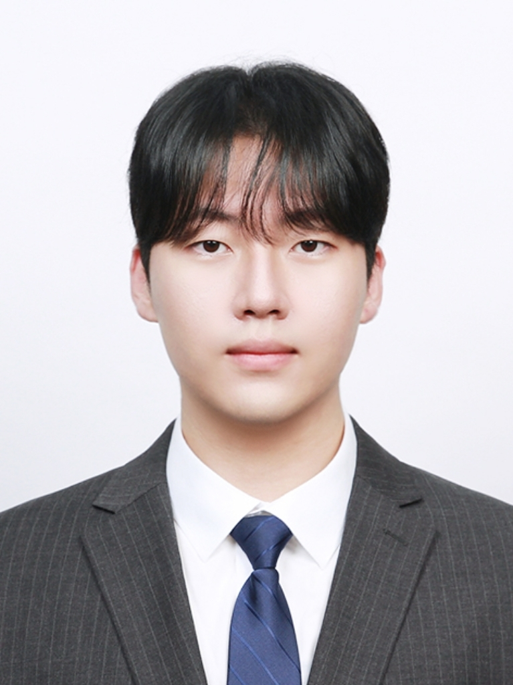

Yonsei University
Ph.D. in Computer Science
Advisor: Prof. Seong Jae Hwang
Medical Imaging & Computer Vision Lab
Mar 2023 — Feb 2028Present
I am a Ph.D. student in Computer Science at Yonsei University, advised by Prof. Seong Jae Hwang in the Medical Imaging & Computer Vision Lab.
My research explores how generative models can offer precise control over visual content and connect heterogeneous medical images. I work on training-free video motion control, Schrödinger bridges, diffusion-like models, and medical image translation and registration.

I will join the LEMoN Lab at Harvard Medical School / Massachusetts General Hospital as a Visiting Researcher in March 2027!
Two papers of ours were accepted to ECCV 2026!
Honored to receive the AI Seoul Tech. Scholarship from the Seoul Scholarship Foundation!
I performed as the keyboardist in a band at the MICCAI 2025 Gala Dinner! ATN News
Two papers of ours were accepted to MICCAI 2025!
Our paper on MRI-free brain amyloid PET quantification was accepted to Clinical Nuclear Medicine!
Our paper on automated brain PET quantification using CT-to-MR translation, which I co-first-authored, was accepted to EJNMMI!
Our paper Disentangling Disentangled Representations was accepted to WACV 2025!
Our paper CT2MRI was accepted to MICCAI 2024 as an early accept!
Ph.D. in Computer Science
Advisor: Prof. Seong Jae Hwang
Medical Imaging & Computer Vision Lab
Mar 2023 — Feb 2028Present
B.S. in Computer Science
Mar 2017 — Feb 2023
* Equal contribution.

ECCV 2026
Query warping · Training-free motion control · Video diffusion transformers

ECCV 2026
Attention-head specialization · Motion transfer · Structural guidance
MICCAI 2025
Cross-modal registration · Modality translation · Deformable alignment
WACV 2025
Disentangled representations · Dynamic Gaussian anchoring · Skip dropout

MICCAI 2024Early accept
CT-to-MRI translation · Brownian bridges · Slice-consistent 3D generation
* Equal contribution.
Alzheimer’s Research & Therapy 2025IF 8.9
CT-based brain parcellation · Centiloid quantification · MRI-free amyloid PET
Clinical Nuclear Medicine 2025IF 9.6
PET denoising · Scan-time reduction · Motion correction · Multicenter validation
European Journal of Nuclear Medicine and Molecular Imaging 2025IF 7.6
CT-to-MR synthesis · Regional brain segmentation · Automated PET quantification
Clinical Nuclear Medicine 2025IF 9.6
Precontrast CT parcellation · MRI-free amyloid quantification · Brain PET/CT
AI/SW R&D Team Leader (CTO)
Led development of brain PET analysis and CT-based neurological imaging solutions, low-dose PET reconstruction, and PSMA tumor detection. Worked on Korean medical-device regulatory approvals.
Jun 2022 — Jan 2025
Intern · System LSI Division
CPU scheduler optimization for application processors.
Aug 2021 — Dec 2021
Kyobin Choo, Youngjun Jun · KR 10-2905764 · Granted · PCT application in progress
Kyobin Choo, Youngjun Jun · KR 10-2881752 · Granted · PCT application in progress
Kyobin Choo · KR 10-2695718 · Granted
Kyobin Choo, Jihye Lee · KR 10-2644342 · Granted
Kyobin Choo · KR 10-2627874 · Granted · PCT application in progress
Kyobin Choo · KR 10-2644343 · Granted
Kyobin Choo · KR 10-2631389 · Granted
Kyobin Choo · KR 10-2593628 · Granted
Mijin Yun, Kyobin Choo · KR 10-2023-0084727 · Application